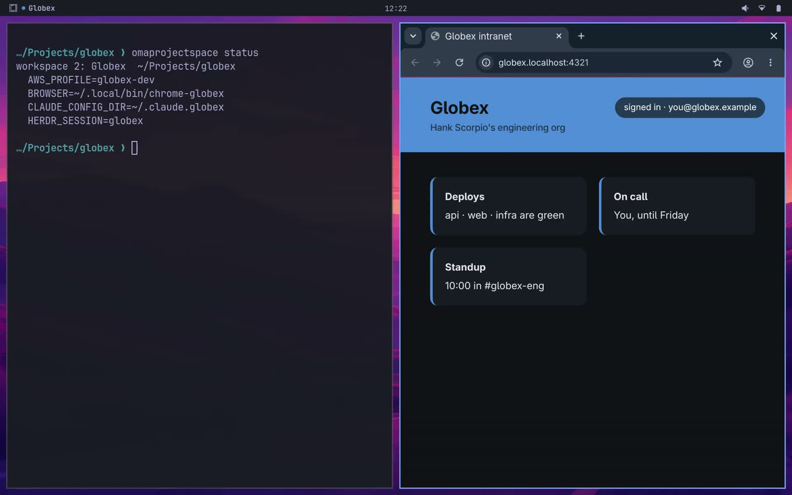
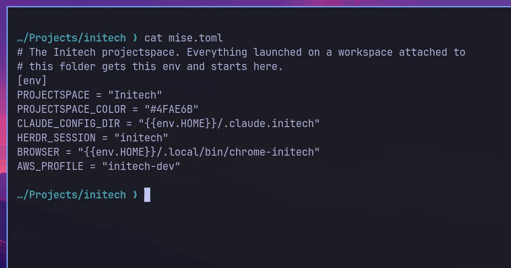
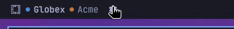
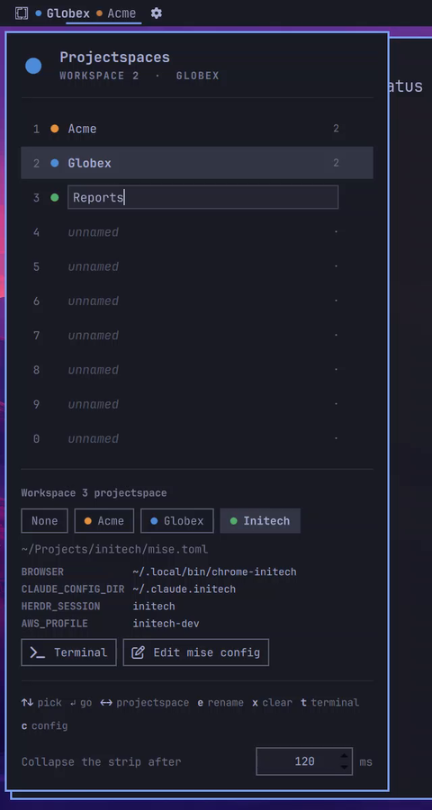

Attach a Hyprland workspace to a team folder. Everything you launch there starts in that folder, with that team's mise env (Claude config, herdr session, cloud profile, tool versions) and opens that team's browser profile.
omarchy plugin add https://github.com/mehiel/mehiel.omaprojectspace
There's no registry and no daemon. A projectspace is a folder, its configuration is its mise config, and the only state is which workspace points at which folder.
Any folder under ~/Projects with a mise config is a projectspace. Use mise.local.toml to keep it personal. Projects inside it inherit it.
# ~/Projects/acme/mise.local.toml [env] CLAUDE_CONFIG_DIR = "~/.claude.acme" HERDR_SESSION = "acme" AWS_PROFILE = "acme-dev" BROWSER = "~/.local/bin/chrome-acme" [tools] java = "21"
Optional: PROJECTSPACE_COLOR and PROJECTSPACE_ICON override the automatic dot.
From the bar's panel (Super Alt P, then ← →) or the CLI. The bar marks it with the team's color. Only the workspaces you attach change; the rest stay stock.
$ omaprojectspace attach 1 acme workspace 1 → acme (~/Projects/acme) $ omaprojectspace list Acme ~/Projects/acme ws 1 Globex ~/Projects/globex ws 2 Initech ~/Projects/initech -
Omarchy launches everything through uwsm-app. A shim in front of it adds the active workspace's env and folder.
$ omaprojectspace status
workspace 1: Acme ~/Projects/acme
AWS_PROFILE=acme-dev
BROWSER=~/.local/bin/chrome-acme
CLAUDE_CONFIG_DIR=~/.claude.acme
HERDR_SESSION=acme
Attached workspaces carry the team's dot and name. A custom name wins, and the dot stays.
Pick a row, cycle its projectspace with ← →, rename with e, open a team terminal with t.
Set BROWSER in mise and anything that opens a URL uses that team's Chrome profile: the browser key, aws sso login, gh --web. Teams can share a profile.
A new terminal starts in the team folder. One opened from another terminal keeps that terminal's folder.
After a reboot, o in the panel, or a switch at login, reopens each workspace's terminals, herdr or tmux sessions, browser and web apps, with their team's env.
Untrusted config, missing folder, any error: the app still launches, plainly, with a notification. omaprojectspace doctor checks it all.




$ omarchy plugin add https://github.com/mehiel/mehiel.omaprojectspace $ ~/.config/omarchy/plugins/mehiel.omaprojectspace/bin/omaprojectspace install $ omarchy bar put mehiel.omaprojectspace $ omaprojectspace doctor
install links the CLI and the shim into ~/.local/bin and adds the
keybinds to Hyprland. uninstall removes all of it.
| ↑ ↓ · 1–0 | pick a workspace |
| ← → | cycle its projectspace |
| Enter | go there |
| e | rename |
| x | clear the projectspace, then the name |
| t · c | team terminal · edit its mise config |
| o · O | restore last session's windows · on every workspace |
| s | save the windows now (auto-save runs every minute) |
Running single-instance apps keep their env. A Slack desktop that's already open won't switch teams. Chrome is fine: a new window opens in the right profile.
Links clicked inside other apps go to your default browser, not the team's.
Windows keep the env they started with, even if you move them to another workspace.